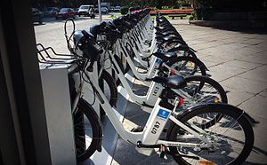
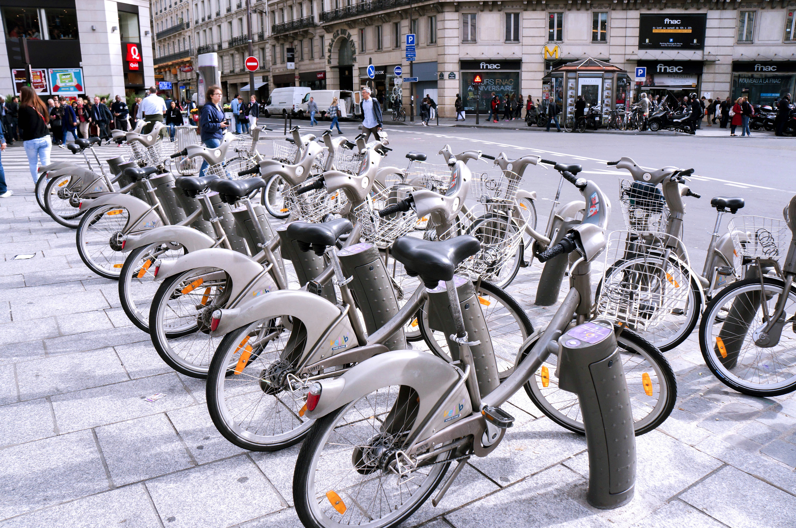
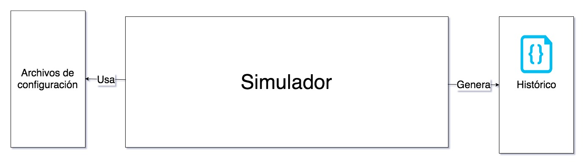
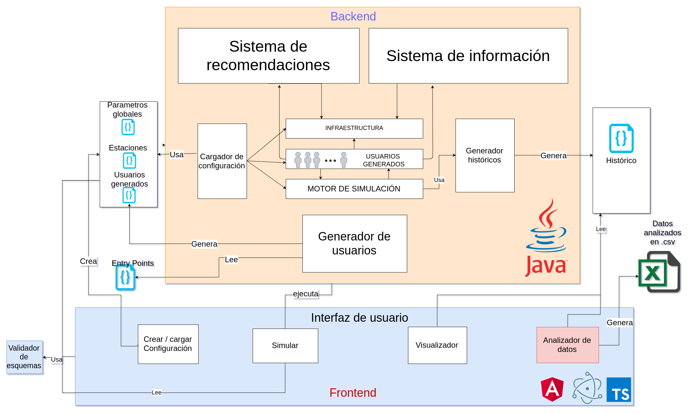
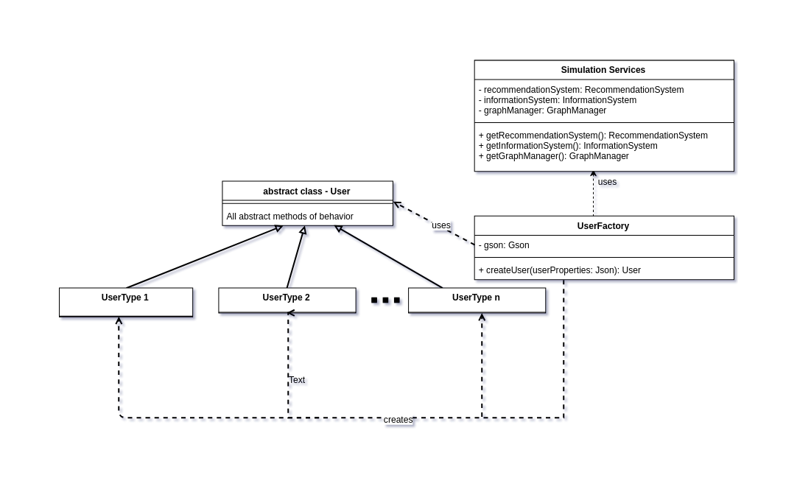

Arquitectura, diseño y configuración de un simulador de bicicletas compartidas
Autor:Carlos Ruiz BallesterosTutor: Holger Billhardt
1. Introducción - Motivación
- Movilidad en las grandes ciudades:
- Ágil.
- Accesible para todos.
- Problema de interes creciente debido a:
- Mejorar circulación automovilística.
- Reducción de la contaminación.
- Incentivación de medios alternativos como servicio.
1. Introducción - Motivación


Mejorar los sistemas ya existentes, como por ejemplo los sistemas de bicicletas compartidas.
- Ejemplos
- BiciMad
Madrid - España - Vèlib
Paris - Francia - Santander cycles
Londres - Reino Unido
1. Introducción - Motivación
¿Qué podemos hacer para mejorar este sistema?
Balancear los recursos (bicicletas) entre estaciones. Algunas situaciones que pueden producir un desequilibrio son:
- Eventos especiales
- Horas punta
- Aglomeraciones inesperadas
#### ¿Cómo podemos probar nuevas estrategias de balanceo?
Probar/implementar soluciones a estos problemas en la realidad puede ser muy tedioso y complicado:
- Altos riesgos y costes.
- Posibles cambios estructurales.
- Implementación de nuevos sistemas informáticos.
2. Desarrollo - Arquitectura y diseño.
Arquitectura simple del simulador
2. Desarrollo - Arquitectura y diseño
2. Desarrollo - Extensibilidad.
Ejemplo con los usuarios
Mejor os lo muestro